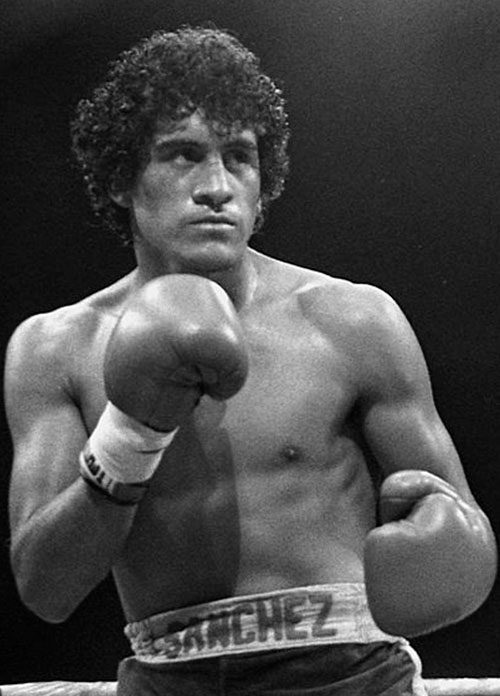

|
MEXICANOS |
| |
MEXICANOS |
INICIO |
ESTADOUNIDENSES |
PUERTORRIQUEÑOS |
| Nombre: Julio César Chávez González | |
| Edad Actual: 57 años | |
| Record Profesional: 107 victorias, 86 knockouts, 21 decisiones, 6 derrotas, 2 por knockout y 2 empates | |
| Record: Es el boxeador con más peleas de título mundial (37), Junto con Omar Narváez, posee el récord de más defensas del título (29), Posee el récord de más peleas ganadas desde su inicio profesional (89-0), Se mantuvo oficialmente invicto 13 años, 11 meses, 24 días, Es después de Joe Louis, (23) el segundo boxeador con mayor número de peleas de título que ha resuelto por nocaut (21), Posee la segunda mayor asistencia a una arena 132, 274, detrás del récord Guinnes que tiene la pelea de Tony Zale contra Billy Pryor en 1941 de 135, 000. En un año congregó a 262, 272 aficionados en cuatro de sus peleas, Es el primer púgil mexicano con tres títulos mundiales en igual número de divisiones | |
| Títulos Mundiales: Campeón mundial de peso superpluma del CMB,Campeón mundial de peso ligero de la AMB,Campeón mundial de peso ligero del CMB,Campeón mundial de peso superligero del CMB,Campeón mundial de peso superligero de la FIB |
|  | Nombre: Salvador Sánchez Narváez |
| Edad Actual: Se encuentra muerto | |
| Record Profesional: 44 victorias, 36 knockouts, 12 decisiones, 1 derrota por decision | |
| Record: 0 | |
| Títulos Mundiales: Campeón mundial de peso pluma del CMB |
| Nombre: Juan Manuel Ma´rquez | |
| Edad Actual: 46 años | |
| Record Profesional: 56 Ganadas (40 knockouts, 15 decisiones), 7 Derrotas (6 decisiones, 1 descalificación), 1 Empate | |
| Record: 0 | |
| Títulos Mundiales: Boxeador de la Década de la WBO19?, Campeón mundial de peso pluma de la FIB,Campeón mundial de peso pluma de la AMB, Campeón mundial de peso pluma de la WBO, Campeón mundial de peso superpluma del CMB, Campeón mundial de peso ligero para The Ring, Campeón mundial de peso ligero de la AMB, Campeón mundial de peso ligero de la WBO,Campeón mundial de peso superligero de la WBO, Campeón NABO de peso pluma de la WBO, Campeón de peso pluma de la NABF,Campeón de peso pluma de la USBA. |
| Nombre: Ricardo López Nava | |
| Edad Actual: 53 años | |
| Record Profesional: 51 victorias (38 por nocaut), 1 empate y 0 derrotas | |
| Record: 0 | |
| Títulos Mundiales: Campeón peso mínimo Asociación Mundial de Boxeo, Campeón peso minimosca Federación Internacional de Boxeo |
| Nombre: Raúl Macías Guevara | |
| Edad Actual: Se encuentra muerto | |
| Record Profesional: 41 victorias (25 por nocaut) y 2 derrotas. | |
| Record: 0 | |
| Títulos Mundiales: Campeonato mundial de peso gallo de la Asociación Nacional de Boxeo |